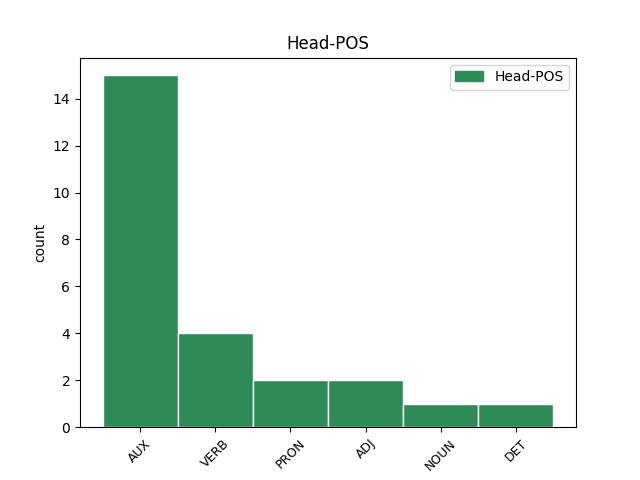

Distribution of features within this leaf

Agreement Rules sorted by frequency.
- When the dependent token is the conjunct(conj) of the head token, and the head token is AUX and the dependent token is AUX.
1 Stuart _ _ _ _ 0 _ _ _
2 Pearce _ _ _ _ 0 _ _ _
3 oedd _ AUX _ Aspect=Imp|Mood=Ind|Number=Sing|Person=1|Tense=Past|VerbForm=Fin|Voice=Act 0 _ _ _
4 rheolwr _ _ _ _ 0 _ _ _
5 tîm _ _ _ _ 0 _ _ _
6 y _ _ _ _ 0 _ _ _
7 dynion _ _ _ _ 0 _ _ _
8 , _ _ _ _ 0 _ _ _
9 a _ _ _ _ 0 _ _ _
10 Hope _ _ _ _ 0 _ _ _
11 Powell _ _ _ _ 0 _ _ _
12 oedd _ AUX _ Aspect=Imp|Mood=Ind|Number=Sing|Person=1|Tense=Past|VerbForm=Fin|Voice=Act 3 conj _ _
13 rheolwr _ _ _ _ 0 _ _ _
14 tîm _ _ _ _ 0 _ _ _
15 y _ _ _ _ 0 _ _ _
16 merched _ _ _ _ 0 _ _ _
17 . _ _ _ _ 0 _ _ _
1 Ceir _ _ _ _ 0 _ _ _
2 mwy _ _ _ _ 0 _ _ _
3 nag _ _ _ _ 0 _ _ _
4 un _ _ _ _ 0 _ _ _
5 enghraifft _ _ _ _ 0 _ _ _
6 yng _ _ _ _ 0 _ _ _
7 ngwaith _ _ _ _ 0 _ _ _
8 Beirdd _ _ _ _ 0 _ _ _
9 yr _ _ _ _ 0 _ _ _
10 Uchelwyr _ _ _ _ 0 _ _ _
11 o _ _ _ _ 0 _ _ _
12 farwnadau _ _ _ _ 0 _ _ _
13 ffug _ _ _ _ 0 _ _ _
14 hefyd _ _ _ _ 0 _ _ _
15 , _ _ _ _ 0 _ _ _
16 er _ _ _ _ 0 _ _ _
17 enghraifft _ _ _ _ 0 _ _ _
18 i _ _ _ _ 0 _ _ _
19 gyd _ _ _ _ 0 _ _ _
20 - _ _ _ _ 0 _ _ _
21 feirdd _ _ _ _ 0 _ _ _
22 , _ _ _ _ 0 _ _ _
23 sy'n _ _ _ _ 0 _ _ _
24 awgrymu'r _ _ _ _ 0 _ _ _
25 posibilrwydd _ _ _ _ 0 _ _ _
26 mai _ _ _ _ 0 _ _ _
27 " _ _ _ _ 0 _ _ _
28 canu'n _ _ _ _ 0 _ _ _
29 iach _ _ _ _ 0 _ _ _
30 " _ _ _ _ 0 _ _ _
31 i'w _ _ _ _ 0 _ _ _
32 cariad _ _ _ _ 0 _ _ _
33 pan _ _ _ _ 0 _ _ _
34 briododd _ _ _ _ 0 _ _ _
35 hi hi PRON _ Gender=Fem|Number=Sing|Person=3 36 subj _ _
36 oedd _ AUX _ Gender=Masc|Number=Sing|Person=3|Polarity=Pos|Tense=Past|VerbType=Cop 0 _ _ _
37 Llywelyn _ _ _ _ 0 _ _ _
38 . _ _ _ _ 0 _ _ _
1 Crist _ _ _ _ 0 _ _ _
2 o ele PRON _ Case=Acc|Gender=Fem|Number=Sing|Person=3|PronType=Prs|Strength=Weak 3 comp:obj _ _
3 flaen flaar VERB _ Mood=Ind|Number=Plur|Person=3|Tense=Pres|VerbForm=Fin 0 _ _ _
4 Caiaphas _ _ _ _ 0 _ _ _
5 . _ _ _ _ 0 _ _ _
1 Er _ _ _ _ 0 _ _ _
2 nad _ _ _ _ 0 _ _ _
3 yn _ _ _ _ 0 _ _ _
4 Gymro _ _ _ _ 0 _ _ _
5 o _ _ _ _ 0 _ _ _
6 ran _ _ _ _ 0 _ _ _
7 tras _ _ _ _ 0 _ _ _
8 daeth _ _ _ _ 0 _ _ _
9 i _ _ _ _ 0 _ _ _
10 ystyried _ _ _ _ 0 _ _ _
11 ei el PRON _ Case=Acc,Nom|Gender=Masc|Number=Plur|Person=3|PronType=Prs|Strength=Strong 0 _ _ _
12 hun hun PRON _ Person=3|PronType=Prs 11 unk@fixed _ _
13 yn _ _ _ _ 0 _ _ _
14 Gymro _ _ _ _ 0 _ _ _
15 gwladgarol _ _ _ _ 0 _ _ _
16 , _ _ _ _ 0 _ _ _
17 ffaith _ _ _ _ 0 _ _ _
18 a _ _ _ _ 0 _ _ _
19 adlewyrchir _ _ _ _ 0 _ _ _
20 yn _ _ _ _ 0 _ _ _
21 aml _ _ _ _ 0 _ _ _
22 yn _ _ _ _ 0 _ _ _
23 ei _ _ _ _ 0 _ _ _
24 weithiau _ _ _ _ 0 _ _ _
25 llenyddol _ _ _ _ 0 _ _ _
26 . _ _ _ _ 0 _ _ _
1 Lansiwd _ _ _ _ 0 _ _ _
2 Cysill _ _ _ _ 0 _ _ _
3 fel _ _ _ _ 0 _ _ _
4 rhaglen _ _ _ _ 0 _ _ _
5 gyfrifiadurol _ _ _ _ 0 _ _ _
6 ar _ _ _ _ 0 _ _ _
7 ben _ _ _ _ 0 _ _ _
8 ei el PRON _ Case=Acc,Nom|Gender=Masc|Number=Plur|Person=3|PronType=Prs|Strength=Strong 0 _ _ _
9 hun hun PRON _ Person=3|PronType=Prs 8 mod@poss _ _
10 yn _ _ _ _ 0 _ _ _
11 1992 _ _ _ _ 0 _ _ _
12 . _ _ _ _ 0 _ _ _
1 Maamme maa NOUN _ Mood=Ind|Number=Plur|Person=1|Tense=Pres|VerbForm=Fin|Voice=Act 0 _ _ _
2 ( _ _ _ _ 0 _ _ _
3 Cyfieithiad _ _ _ _ 0 _ _ _
4 gan _ _ _ _ 0 _ _ _
5 Paavo _ _ _ _ 0 _ _ _
6 Cajander _ _ _ _ 0 _ _ _
7 ) _ _ _ _ 0 _ _ _
8 : _ _ _ _ 0 _ _ _
9 Oi _ _ _ _ 0 _ _ _
10 maamme maa NOUN _ Mood=Ind|Number=Plur|Person=1|Tense=Pres|VerbForm=Fin|Voice=Act 1 parataxis _ _
11 , _ _ _ _ 0 _ _ _
12 Suomi _ _ _ _ 0 _ _ _
13 , _ _ _ _ 0 _ _ _
14 synnyinmaa _ _ _ _ 0 _ _ _
15 ! _ _ _ _ 0 _ _ _
1 Nis nis PRON _ Case=Nom|Gender=Fem,Masc|Number=Plur|Person=2|PronType=Prs 2 subj _ _
2 oes oes VERB _ Mood=Imp|Number=Sing|Person=2|VerbForm=Fin 0 _ _ _
3 unrhyw _ _ _ _ 0 _ _ _
4 gofnod _ _ _ _ 0 _ _ _
5 pellach _ _ _ _ 0 _ _ _
6 amdano _ _ _ _ 0 _ _ _
7 . _ _ _ _ 0 _ _ _
1 Rhan Rhan PROPN _ Case=Nom|Number=Sing|Person=3 3 subj _ _
2 o'r _ _ _ _ 0 _ _ _
3 gerddi gerddi ADJ _ Case=Nom|Number=Sing|Person=3 0 _ _ _
4 . _ _ _ _ 0 _ _ _
1 Rhan _ _ _ _ 0 _ _ _
2 o'r o PRON _ Case=Nom|Number=Sing|Person=3|PronType=Dem 3 subj _ _
3 gerddi gerddi ADJ _ Case=Nom|Number=Sing|Person=3 0 _ _ _
4 . _ _ _ _ 0 _ _ _
Disagree Examples:
1 Aelod _ _ _ _ 0 _ _ _
2 y _ _ _ _ 0 _ _ _
3 band _ _ _ _ 0 _ _ _
4 Eagles _ _ _ _ 0 _ _ _
5 oedd _ AUX _ Aspect=Imp|Mood=Ind|Number=Sing|Person=1|Tense=Past|VerbForm=Fin|Voice=Act 0 _ _ _
6 ef ef PRON _ Gender=Masc|Number=Sing|Person=3 5 subj _ _
7 . _ _ _ _ 0 _ _ _
1 Aelod _ _ _ _ 0 _ _ _
2 y _ _ _ _ 0 _ _ _
3 Royal _ _ _ _ 0 _ _ _
4 Shakespeare _ _ _ _ 0 _ _ _
5 Company _ _ _ _ 0 _ _ _
6 ers _ _ _ _ 0 _ _ _
7 1962 _ _ _ _ 0 _ _ _
8 oedd _ AUX _ Aspect=Imp|Mood=Ind|Number=Sing|Person=1|Tense=Past|VerbForm=Fin|Voice=Act 0 _ _ _
9 ef ef PRON _ Gender=Masc|Number=Sing|Person=3 8 subj _ _
10 . _ _ _ _ 0 _ _ _
1 Brenhines _ _ _ _ 0 _ _ _
2 rhwng _ _ _ _ 0 _ _ _
3 1936 _ _ _ _ 0 _ _ _
4 a _ _ _ _ 0 _ _ _
5 1952 _ _ _ _ 0 _ _ _
6 ( _ _ _ _ 0 _ _ _
7 marwolaeth _ _ _ _ 0 _ _ _
8 y _ _ _ _ 0 _ _ _
9 brenin _ _ _ _ 0 _ _ _
10 Siôr _ _ _ _ 0 _ _ _
11 ) _ _ _ _ 0 _ _ _
12 oedd _ AUX _ Aspect=Imp|Mood=Ind|Number=Sing|Person=1|Tense=Past|VerbForm=Fin|Voice=Act 0 _ _ _
13 hi hi PRON _ Gender=Fem|Number=Sing|Person=3 12 subj _ _
14 . _ _ _ _ 0 _ _ _
1 Bu is AUX _ Gender=Fem,Masc|HebBinyan=PAAL|Number=Plur|Person=3|Tense=Past|Voice=Act 0 _ _ _
2 farw _ _ _ _ 0 _ _ _
3 ar _ _ _ _ 0 _ _ _
4 8 _ _ _ _ 0 _ _ _
5 Hydref _ _ _ _ 0 _ _ _
6 2015 _ _ _ _ 0 _ _ _
7 yn _ _ _ _ 0 _ _ _
8 89 _ _ _ _ 0 _ _ _
9 mlwydd _ _ _ _ 0 _ _ _
10 oedd oeí VERB _ Aspect=Imp|Mood=Ind|Number=Sing|Person=1|Tense=Past|VerbForm=Fin|Voice=Act 1 mod _ _
11 . _ _ _ _ 0 _ _ _
1 Canllaw _ _ _ _ 0 _ _ _
2 ydy _ _ _ _ 0 _ _ _
3 o o PRON _ Gender=Masc|Number=Sing|Person=3 6 subj _ _
4 felly _ _ _ _ 0 _ _ _
5 , _ _ _ _ 0 _ _ _
6 am avea AUX _ Person=1 0 _ _ _
7 gariad _ _ _ _ 0 _ _ _
8 , _ _ _ _ 0 _ _ _
9 serch _ _ _ _ 0 _ _ _
10 a _ _ _ _ 0 _ _ _
11 phleserau'r _ _ _ _ 0 _ _ _
12 corff _ _ _ _ 0 _ _ _
13 . _ _ _ _ 0 _ _ _